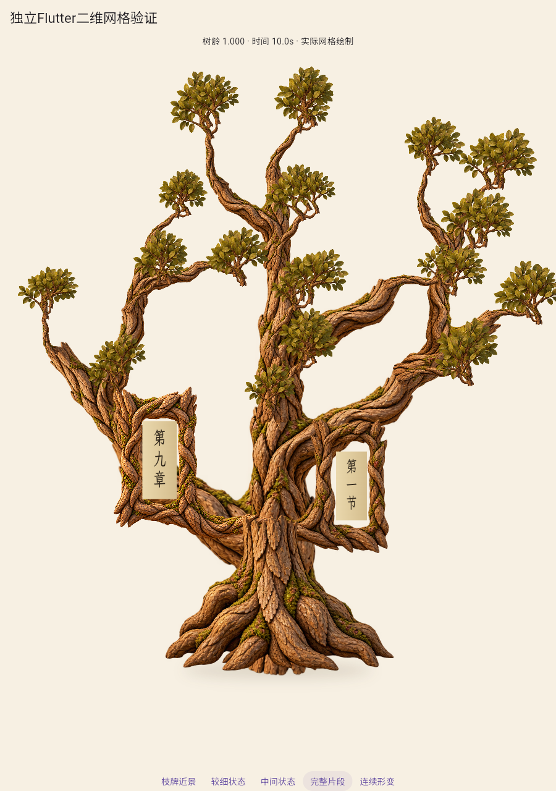
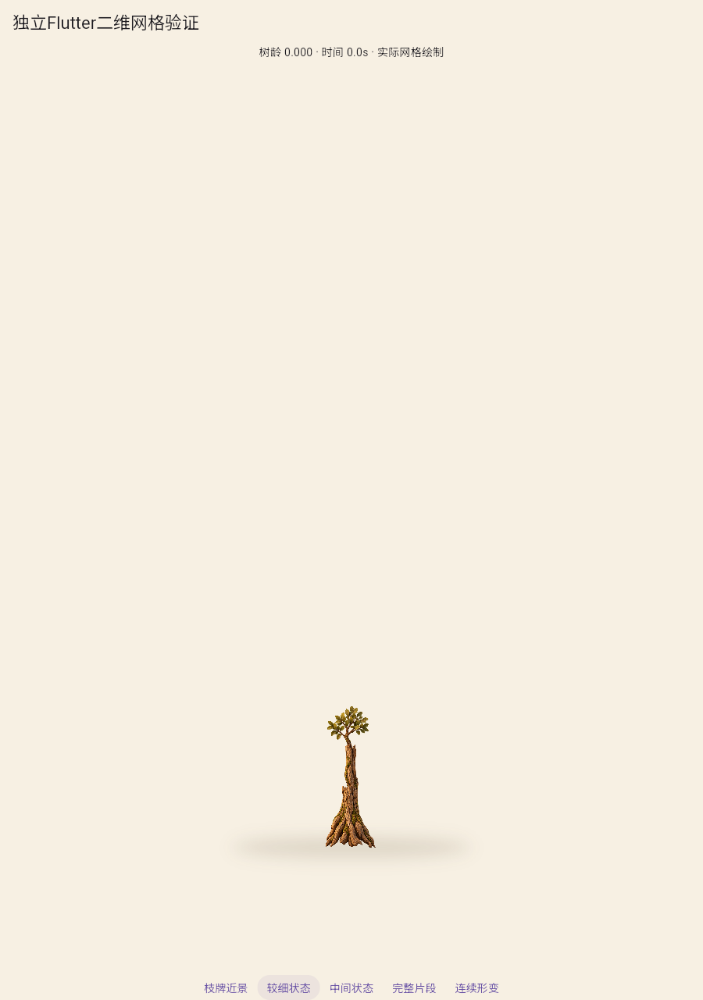
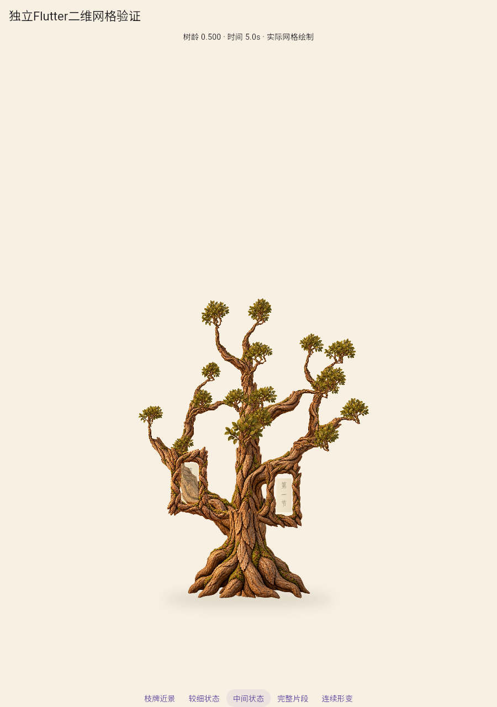
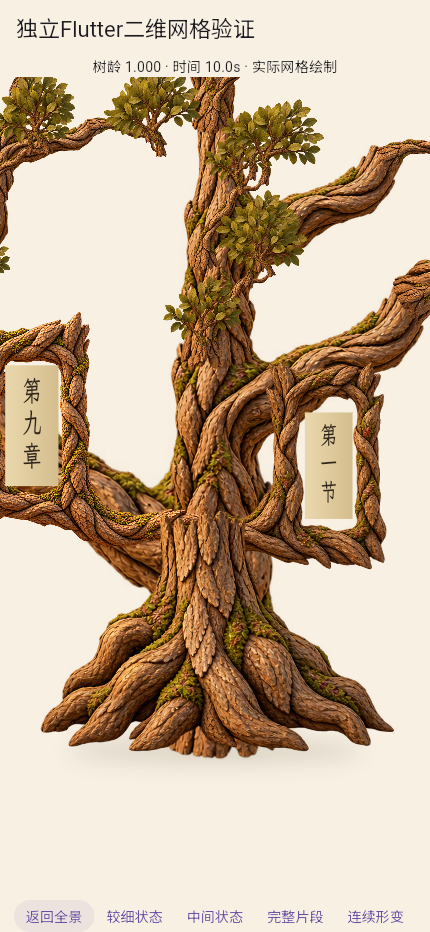
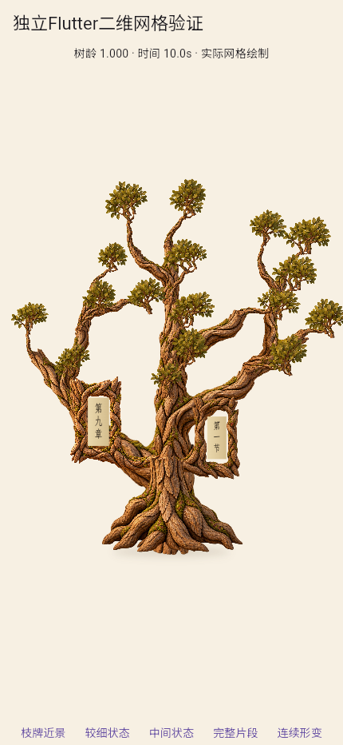

局部插画整树首轮：完整候选已交付，视觉未通过
木质体积改善，但冠层稀疏、右冠裁切、根颈遮挡、幼苗比例和中间纸面透明仍未达标，A2未通过。
 参考的整体形态、低饱和叶冠和木质体积。
参考的整体形态、低饱和叶冠和木质体积。

76局部构件统一骨架，右冠被裁切，不用细节改善抵消造型缺陷。

根干叶齐全，但老树皮、冠干比例及地影未自然。

纸面渐入透出树枝，不等于纸面展开。

成熟文字可读，左框部分裁切，根颈有叠放感。

浏览器视口，不能当实体手机验收。
连续成长
固定相机，101个实际Flutter网格状态，约10.1秒；编码10fps不等于运行帧率。
实际结果与哈希 · 源资产结果 · 实际透明区域 · 旧单纹理回归 · 整套审查和第二轮出口